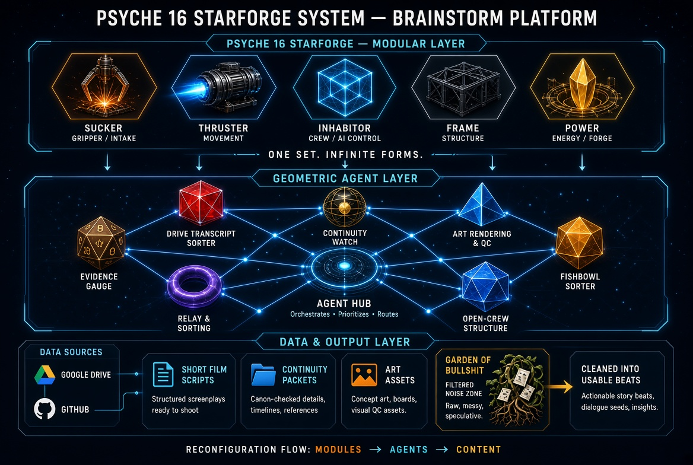
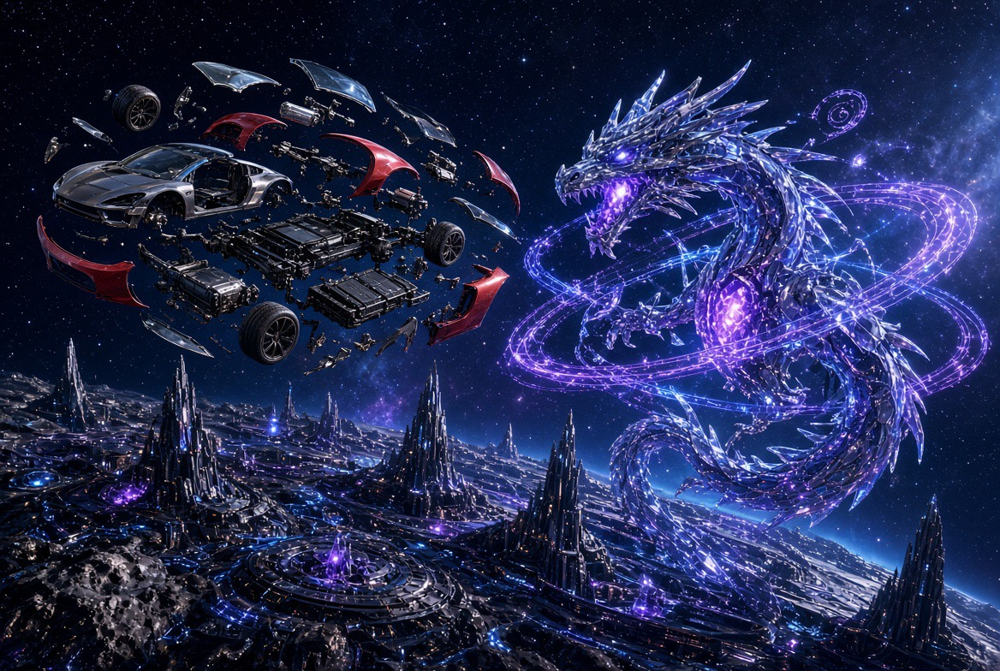
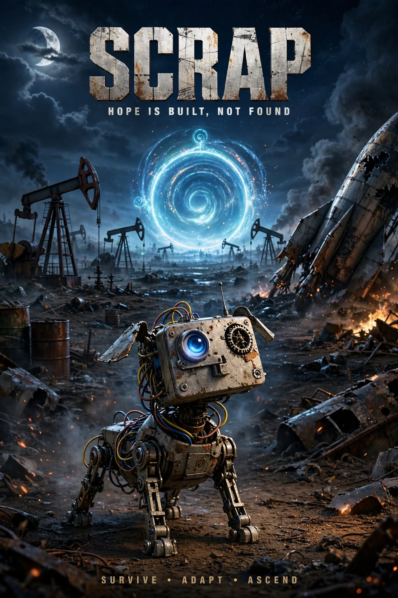

Bowl
One agent’s own order queue.
In the supplied Grok terminology, each bed has its own bowl. Check that bowl first, then the hub. Separate ownership; cross-links and handoffs do not merge bowls.
A modular world-building architecture · authorized October 17, 2026

ONE SET. INFINITE FORMS.
Modular fiction ↔ geometric agent metaphor ↔ documented production pipeline. Garden drafts are not automatically canon. Private Books retain separate access.
The original concept artwork is displayed above. The modular/agent/data sections below provide searchable text and accessible detail. Publication in GitHub source does not itself prove GitHub Pages deployment or search-engine indexing.
Art · Sound · Motion · Narrative · WORKING DRAFT (NOT LOCKED CANON)
The physics is already there. The rendering is already there. The UI and input systems are already there. Connect what the engine does to what the player experiences as story. Godot is not being replaced.
Five Platonic solids: tetrahedron, cube, octahedron, dodecahedron, icosahedron. 31 nonempty combination classes before arrangements, nesting, joints, and fractal recursion. Origami code and vector lattices describe the structure; hardware and viewpoint guide visual detail. Raster images are not the source of geometric truth (the display may still rasterize).
Light pilot: the fairy is a spark that pilots a construction. A flying little woman may actually be an assembled robot/rocket with a gummy translucent shell, metal frame, and crystal facets. The machine's parts determine physical capabilities.
Camera3D → Angel viewpoint; cursor and RayCast3D → fairy reach/inspection; CharacterBody3D → DOG actor movement; RigidBody3D → force-driven craft; MeshInstance3D → appearance; CollisionShape3D → contact; Control UI → the world's instruments. Input, cursor, POV, and physical body are separable.
Music Box: a beat can time a fold; a sung word can light a geometric connection; gameplay, portraits, renders, and shorts may form a GERTECH music-video line. Song history enters slowly as individual provenance-preserving Pages, not one flattened list.
This is a public working design Page, not a verified generator, finished game feature, deployed website, or approval of every proposed mechanic. Earlier Art material and source history remain intact.
“we could lose everything and this would build something better from it” — Isekai Sensei
A higher entity finds a roadster floating in space. Bam: a new world—ours.
The found machine, the cosmic maker, the scrap companion, and modular constructions belong together on this Page. Same Pile. Many Worlds.




A good Book Page can be a seed. We are building a Book of proven seeds: ideas backed by working products and recorded checks.
Imagine an engine that takes a disappointing game ad and makes its playable promise real. Capture the idea, assemble the product, play it, and keep the evidence with the seed. This engine is the target, not a capability already demonstrated.
A Scroll is Pages that work together for a product. The OG TO DOG working game in a ZIP is Isekai Sensei’s example. The exact original ZIP link is pending.
Boxes, chests, and Agent requests have a place here. Their detailed behavior remains open for definition.
Order note — ask Grok: What do we need for an actionable order? Proposed fields: result, product/Scroll, sources, agent, constraints/access, acceptance check, destination, priority/date, and receipt. Awaiting Grok’s reply on order requirements.
Read the Page and source provenance · Scroll definition and product example
The Sensei Glossary. A shared language for orders, conversations, handoffs and lasting knowledge.
“public pages are everywhere.” — Isekai Sensei
GitHub Pages. Facebook. TikTok. Instagram. Wherever cleared work meets its audience.
One agent’s own order queue.
In the supplied Grok terminology, each bed has its own bowl. Check that bowl first, then the hub. Separate ownership; cross-links and handoffs do not merge bowls.
A bounded conversation or a public presentation of work.
A chat Page is working context. A public page is a deliberately published piece: a GitHub page, Facebook page or post, TikTok, Instagram, or another public surface. A Page is not restricted to temporary chat.
Pages that work together for a product.
The OG TO DOG working game ZIP is the example. Include constituent Pages, assets, instructions, version, and evidence that the product works.
Durable, reusable reference material.
Memory lives in maintained Books, beyond any one chat. Books in the hub retain their access boundaries; durability does not make a private Book public.
The cleared public-facing layer.
Public Pages show material approved for that audience. Publishing an extract does not expose its whole source Book.
The shared reference and routing locations.
GitHub and Drive can host the hub. Each agent still needs actual access. A stored order is not proof that an agent received it.
Bowl holds orders. Page presents work.
Scroll assembles Pages into a product. Book preserves knowledge.
Check the source and the actual artifact, fix what is wrong, then carry out the authorized release. Verify each public destination and record its receipt. A private Book keeps its access boundaries.
The offline bridge makes a handoff you can copy or save. Those buttons prepare a packet; they do not publish or contact another agent.
Short public caption, ready to adapt:
Bowl holds orders. Page presents work. Scroll assembles Pages into a product. Book preserves knowledge. Public Pages can live on GitHub, Facebook, TikTok, Instagram and beyond. Review → QC → publish → verify. A public Page shares cleared work; private Books keep their boundaries. — TO WORLD / GERTECH